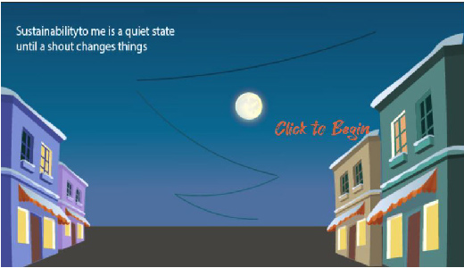
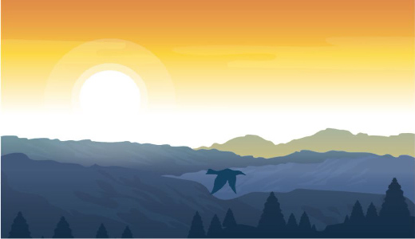
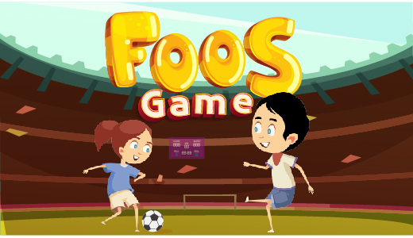
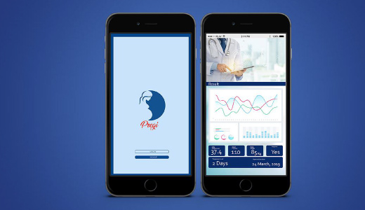
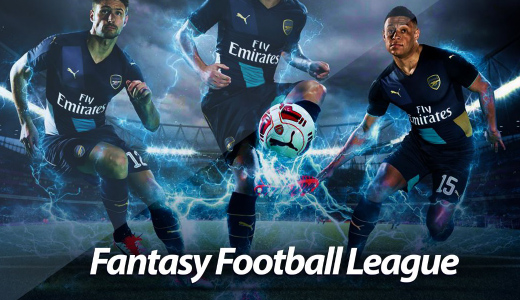
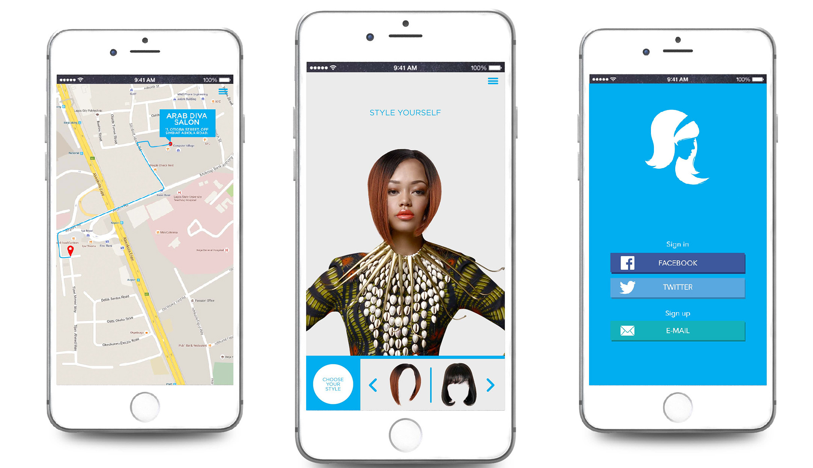
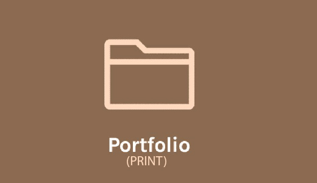

Improved Facility Upkeep Application (UI/UX)
Sending complaints to the facility departments via email,
or phone calls alone is trite, users are unable to monitor the progress
of the maintenance and the facility managers cannot categorise
the fault according to the type. Click Here
to View mobile
Sketch for students click here for sketch of the facility manager
click here to experience interactive prototype for students
click here
to experience interactive prototype for managers
Mock up video for students Mock up video for managers
VR/AR Immersive Expereince on Climate Change
Climate Change is the long-term rise in the average temperature
of the Earth's climate system.In the immersive experience
I want to create, the first stage the user will be walking
around the environment noting where there are absence of trees.
The final stage the environment is covered with the trees
making the environment beautiful.(Created with Unity)
Click Here to view Click Here to view VR Experience
to view the expeirence in AR Click Here
Augmented Realities Offering New Realities to Space Travel
This project is to help audience have an experience what it feels like to travel
to the Space, this project is making use of augmented realities to create the
experience for the
audience, having them hover their phone over the project
as it is staged. To read more Document 1 Document 2
Game Design: Social Run
Social Run is a game that shows how human run after social
accreditation like the like and love button
but doean't like the angry
button associated with their post,for each level to be completed
the character has to defeat
the internet trolls. To watch the
game demo Click here
Exhibited at the University Gallery @2020 Click here
Windows Version: Download
IOS Version: Download
The stickman reaction

The stickman is a protector of the farmland but,
when predators
come to attack the farmland it changes it moods
to send predators
of the farmland.(Created with p5.js)Click Here to view
The Quiet Zone
 The quiet zone is stable zone until an external ,
noise causes chaos
which makes the biker disappear.(created with p5.js)Click Here to play
The Bird Hunter
 The bird hunter is an angry bird that kills every other,
that comes across its
path, and it calls its the king of the sky
(the game was programmed using p5.js).
Click Here to play
Foos Game
 The foos game is fashioned after the table top game,
where the user
can use the mobile phone as the control through
gyroscope
or can use the keyboard (the game was programmed using p5.js).
Click Here to play
The Pregi App (UI/UX)
 The pregi App is an application that helps,
in early detection
according to research it shows that
most teenagers never
they are pregnant. Click Here to read more
Football Fantasy (UI/UX)
 Football fantasy is an interactive webpage where the users,
can interact and share chats and conversation on social
media channels,
users can also share their score points.Click Here to read more
click here to explore Interactive design
Hair App (UI/UX)
 The hair application is to female users that want to buy,
hair extensions of different styles try the one that best fits
them,
before going into the stores to pick them up of order for delivery.
Click Here to read more click here to explore Interactive design
Social Innovation

Research shows that users of smartphone now spend more,
hours with their mobile phone and than ever before. Think back
to the
mobile phone you had in 2010. It could access the internet,
but it wasn't such a great experience
Click Here to read more
Safety App (UI/UX)

climate change is affecting everything that is around us,
which has led to accidents on our major highways and is costing
alot of money
for treating accident victims and road repirs, this application
is to help users to test weather conditions
Click Here to read
journal click here
to view sketches Mock up video
Advertorial Design
Advertisement designs for different brands, Click Here